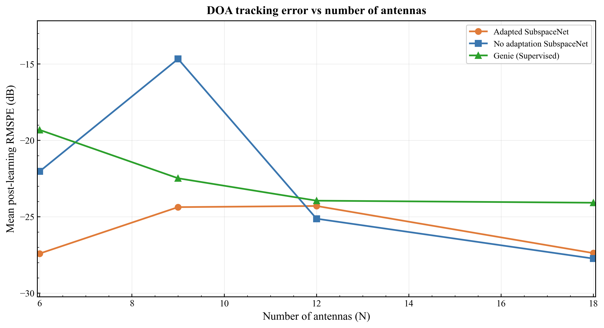
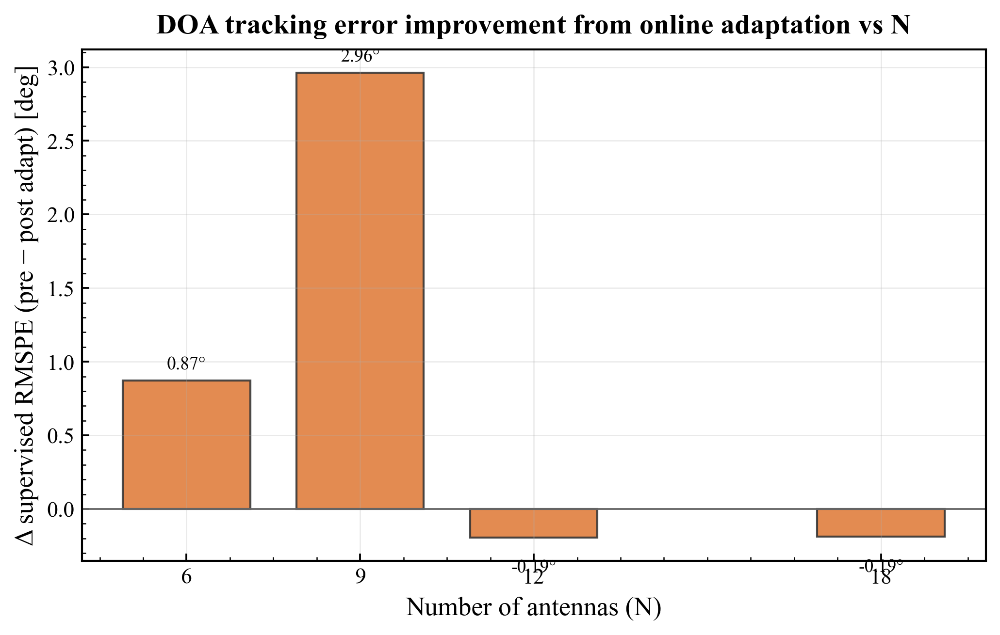
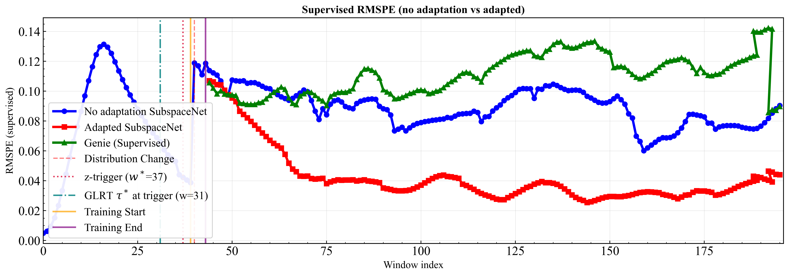
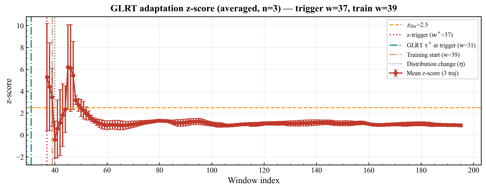
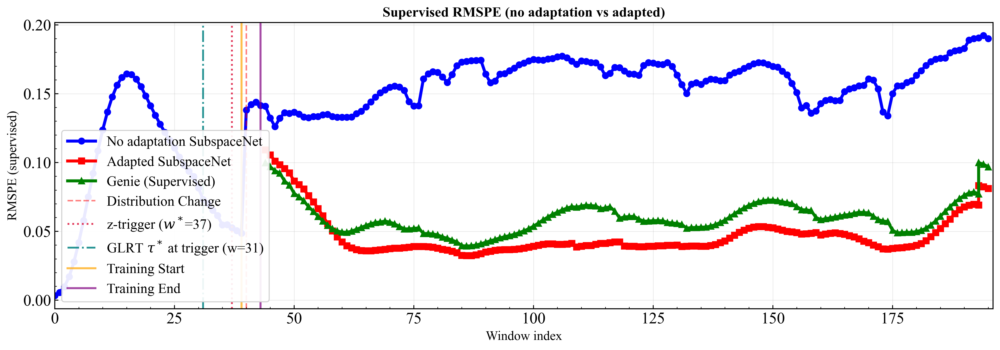
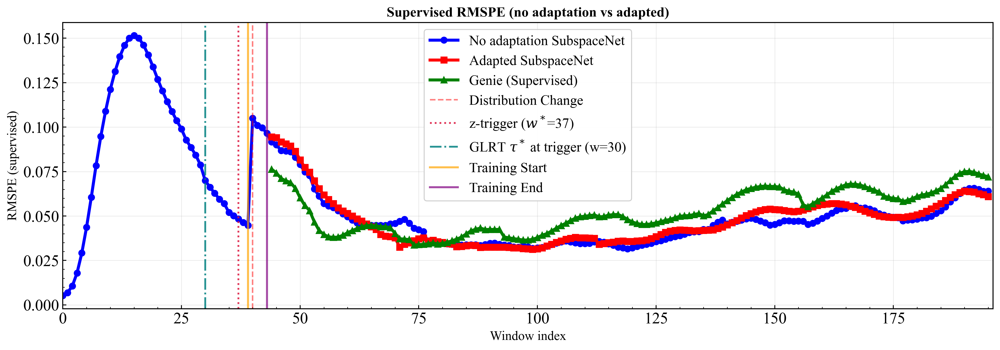
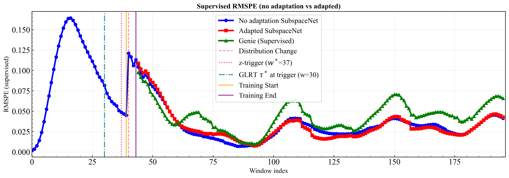

T1 — Antenna count sweep (SubspaceNet) smoke ds=3 — NOT FINAL
Online learning under η jump to 0.9 @ w40, N ∈ {6, 9, 12, 18}. Source run: T1_final_recipe (dG0=7.5, ds=3, all N including N=12).
Findings
- N=6: moderate win — ours 0.076→0.063 vs no_adapt 0.067→0.104 (handoff smoke).
- N=9: strongest win — ours 0.029→0.024 vs no_adapt 0.093→0.131.
- N=12: missing from
T1_eta40_handoff_fix(no N12 ckpt at run time). Included inT1_final_recipererun. - N=18 @ η=0.9: no_adapt 0.067→0.046; ours flat/worse — EKF self-heal regime.
- Adaptive LR vs N: LR is not a function of N directly — see below. N=9 gets lowest dG → LR ~5.5e-4 (near floor) despite needing adaptation most.
Adaptive LR — drift magnitude, not antenna count (but N couples in via loss)
Formula: dG = G_t − baseline_mean on the unsupervised adaptation-loss GLRT series, then sigmoid(dG; dG0=7.5) → LR. N is not an input.
T1_final_recipe (3 traj × 4 N), mean dG at z-trigger:
- N=6: dG≈7.7 → LR 1e-3–1.7e-2
- N=9: dG≈3.0 → LR 5.5e-4 (floor) — training-N model: η jump produces smaller unsupervised loss changepoint
- N=12: dG≈6.0 → LR 5e-4–9e-3
- N=18: dG≈8.9 → LR 1e-3–1.9e-2
So N-dependent LR is a proxy artifact: array/model mismatch changes the adaptation-loss GLRT amplitude, not η alone. Fix options: map LR from z-score or reference-metric GLRT; normalize dG by baseline_std; or use η-calibrated drift signal only.
Paper-relevant configuration
- YAML
- configs/Used_for_paper/paper_T1_antenna_sweep.yaml
- Model
- SubspaceNet (small), ESPRIT, τ=8
- Fixed
- M=3, SNR=10 dB, T=200, far-field
- Sweep
- N ∈ {6, 9, 12, 18} + per-N checkpoints
- Trajectory
- sine_accel_nonlinear, L=200, σ=0.06
- EKF
- extended, Q=0.06, R=0.03
- Drift / η
- warmup=18, η@40 (+0.9), time_to_learn=2, stride=1
- Adapt budget
- 5 windows × 3 GD steps
- Adaptive LR
- min=5e-4, max=2e-2, k=0.7336, dG0=7.5
- Smoke
- dataset_size=3, seed=42
- Full
- dataset_size=20 → experiments/results/journal_paper/paper_T1_antenna

Main comparison: reference-metric loss vs window for no_adapt / ours / genie across N.

Δ supervised RMSPE (no-adapt − adapted) on the same post-training window band. N=9 largest gain (~3.1°); N=18 slightly negative (self-heal).
N = 6

Undersized array vs training N=9: adaptation helps but margin smaller than N=9. no_adapt degrades post-η; ours recovers partially.

Drift detection fires ~w37; same warm18 timeline as other N.
N = 9 (training array)

Best case: sharp drop in ours after adaptation; no_adapt degrades under η mismatch.
N = 12

New N=12 checkpoint; moderate adaptation benefit (~0.6° Δ on post-training band).
N = 18

Large-N self-heal: baseline stays low; adaptation unnecessary at η=0.9.